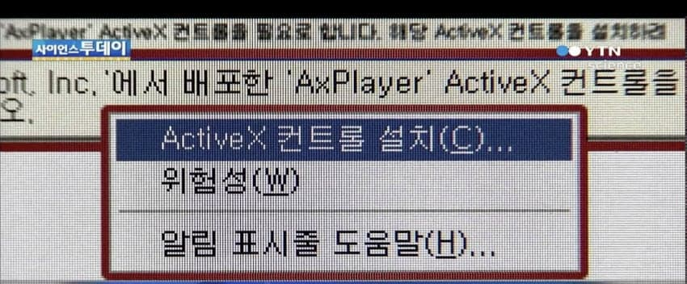
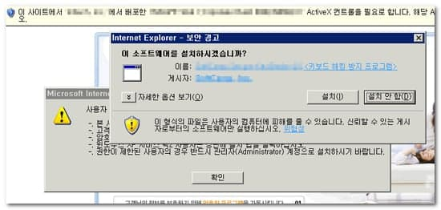
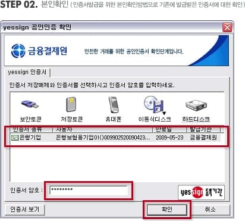
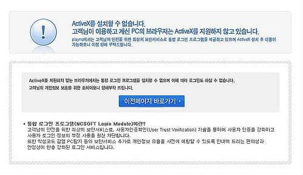
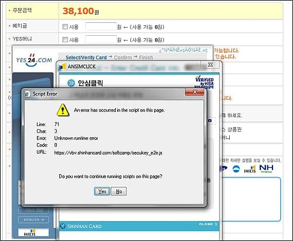
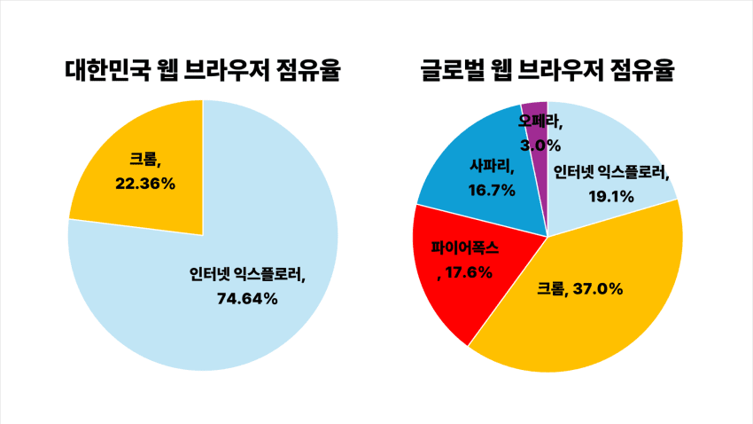
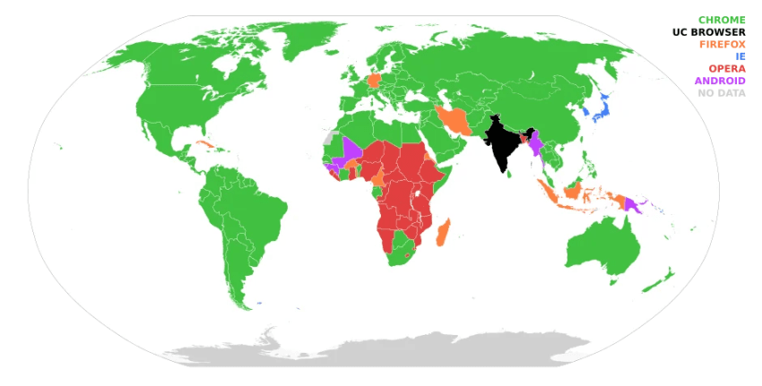
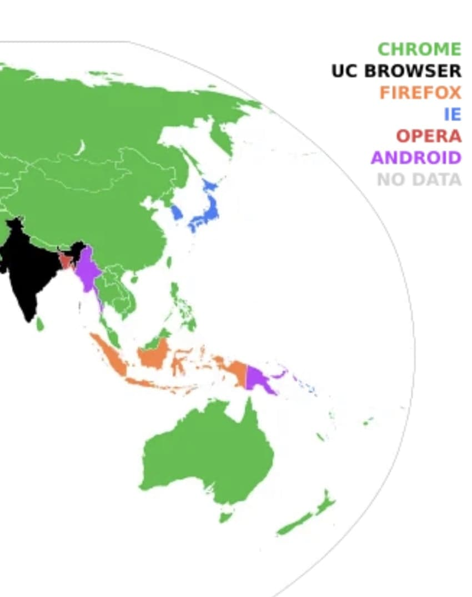
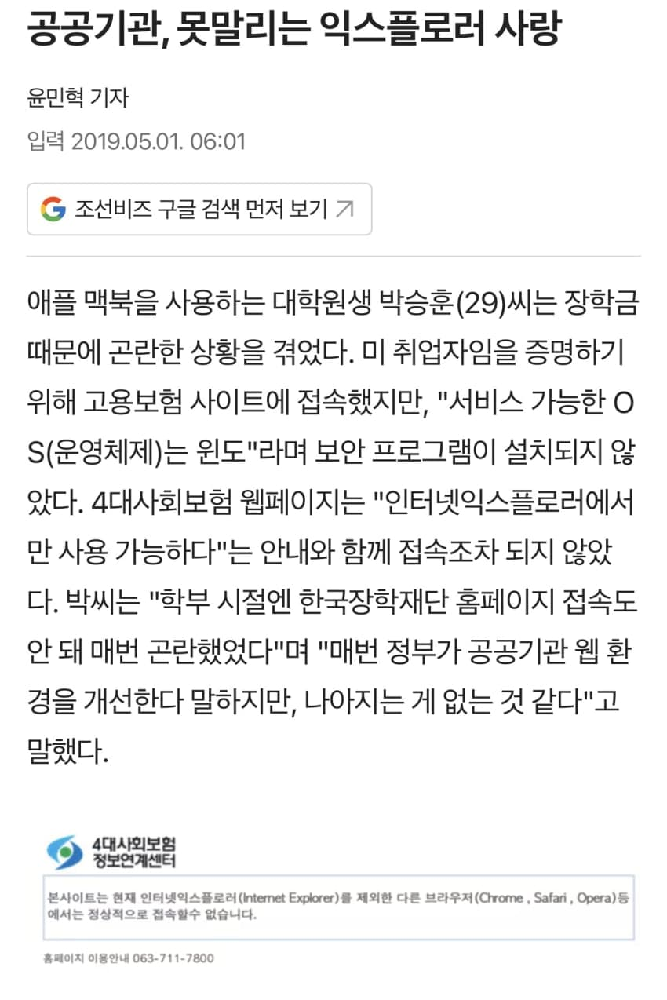

때는 2014년 3월, 별그대가 대륙을 휩쓸던 시절
중꼴라 성님덜은 전지현이 입은 ‘천송이 코트’를
직구로 사기 위해 한국 쇼핑몰에 접속했음
그런데…..

시발

시발

시발!!!


씨바알!!!!!!!
개빡친 중국 네티즌들 사이에서는
“한국 IT강국 아니었음?ㅅㅂ“이라는 반응과 함께
극악한 한국의 인터넷 환경이 화제가 된다.
그리고 전세계로 퍼져나간다.



특히 한국은 당시 대부분이 익스플로러를 쓰는 나라였고
홈페이지 대부분은 크롬으로 접속이 불가능했다.
중국인들은 ‘ㅅㅂ 언제적 익스노ㄷㄷ‘라는 반응을 보였고
맥이나 리눅스로는 이용 자체가 불가능한 환경에 경악했다.
그리고 중국 뉴스는 물론 세계 뉴스에도 등장한다
IT강국임을 자부하던 한국인들은 큰 충격에 빠졌고
당시 대통령이 ‘천송이 코트’를 언급하며 이슈화된다.
결국 사회적으로 액티브X 문제가 커지게 된다.
빨간약을 먹은 한국인들도 크롬 사용률이 증가하며 액티브X를 쓰레기라고 생각하기 시작했고, 급기야 주요 대선공약으로 등장했다.
2017년 해당 후보가 당선되며 이 문제는 빠르게 진행되었고
2019년부터는 순차적으로 공공기관 홈페이지의 액티브X 플러그인이 제거된다.
공인인증서 폐지는 야당의 반대로 몇 년을 표류하다가 2020년에 최종적으로 전자서명법 개정안이 국회를 통과하게 된다.
이후부터는 공인인증서 대신 네이버 등 외부의 공동인증서를 이용할 수 있게 되었다.

하지만 2021년까지 우리나라는 윈도우와 익스플로러에서 완전히 해방되지 못한 상태였다.
오죽했으면 “한국은 MS의 기업국가”라는 말이 있었을 정도로, 민간 공공 구별없이 모든 사이트가 윈도우와 익스에 맞추어져 있었다.
2022년까지도 일부 작업은 익스플로러로 넘어가서 진행해야 했을 정도였으나, 2023년부터는 완전히 익스와 윈도우에서 해방된다